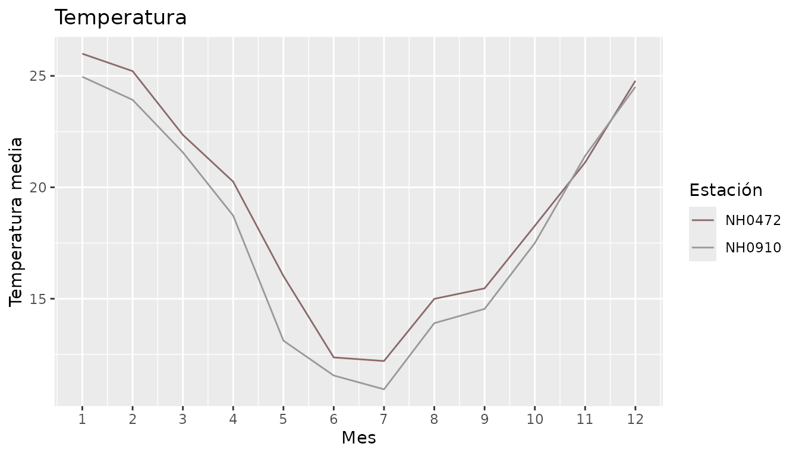
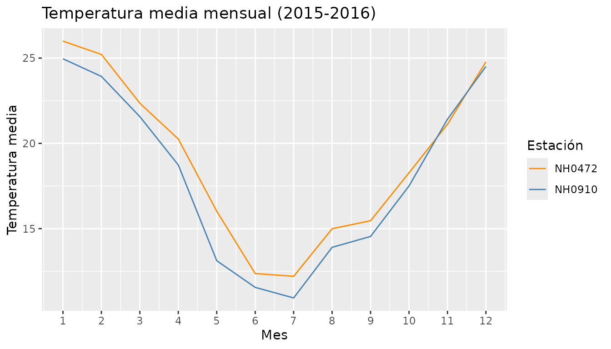
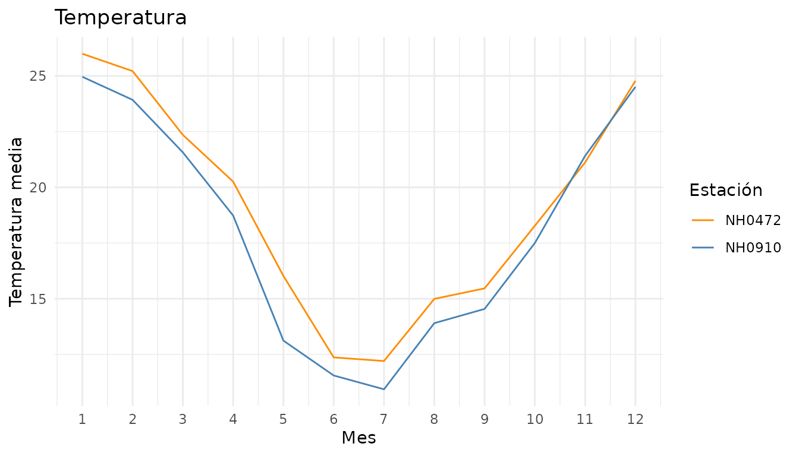

En esta viñeta mostramos cómo usar las cuatro funciones del paquete con un ejemplo completo.
1. Leer los datos
La función leer_estacion() descarga los datos de una
estación a partir de su id. Como necesita internet, en esta
viñeta no la corremos, pero se usa así:
nh0472 <- leer_estacion("NH0472")
nh0910 <- leer_estacion("NH0910")
# Para trabajar con las dos juntas las unimos una debajo de la otra
estaciones <- rbind(nh0472, nh0910)Para los ejemplos usamos estaciones_ejemplo, que viene
con el paquete. Tiene los datos de las estaciones NH0472 y NH0910 para
los años 2015 y 2016.
head(estaciones_ejemplo)
#> # A tibble: 6 × 7
#> id fecha temperatura_abrigo_150cm temperatura_abrigo_150cm_maxima
#> <chr> <date> <dbl> <dbl>
#> 1 NH0472 2015-01-01 19.9 23.8
#> 2 NH0472 2015-01-02 18.8 26.5
#> 3 NH0472 2015-01-03 20.7 30.2
#> 4 NH0472 2015-01-04 23.4 32
#> 5 NH0472 2015-01-05 26.9 34.8
#> 6 NH0472 2015-01-06 29.6 37
#> # ℹ 3 more variables: temperatura_abrigo_150cm_minima <dbl>,
#> # precipitacion_pluviometrica <dbl>, humedad_media_8_14_20 <dbl>2. Tabla resumen de la temperatura
tabla_resumen_temperatura() calcula el promedio y el
desvío estándar de la temperatura de cada estación. Los estadísticos
quedan en las filas y las estaciones en las columnas.
tabla_resumen_temperatura(estaciones_ejemplo)
#> # A tibble: 2 × 3
#> estadistico NH0472 NH0910
#> <chr> <dbl> <dbl>
#> 1 promedio 19.1 18.2
#> 2 desvio 5.74 6.093. Precipitación de cada mes
precipitacion_mensual() suma la lluvia de todos los días
de cada mes, para cada estación. La columna mes tiene el
primer día de cada mes.
precipitacion <- precipitacion_mensual(estaciones_ejemplo)
head(precipitacion)
#> # A tibble: 6 × 3
#> id mes precip_acumulada_mensual
#> <chr> <date> <dbl>
#> 1 NH0472 2015-01-01 221
#> 2 NH0472 2015-02-01 99
#> 3 NH0472 2015-03-01 125.
#> 4 NH0472 2015-04-01 66.6
#> 5 NH0472 2015-05-01 156
#> 6 NH0472 2015-06-01 69.5Por ejemplo, podemos ver cuál fue el mes más lluvioso de cada estación:
4. Gráfico de la temperatura mensual
grafico_temperatura_mensual() grafica la temperatura
media de cada mes. Si no le pasamos colores, los elige al azar (usamos
set.seed() para que siempre salgan los mismos).
set.seed(42)
grafico_temperatura_mensual(estaciones_ejemplo)
También podemos elegir los colores y el título:
grafico_temperatura_mensual(
estaciones_ejemplo,
colores = c("darkorange", "steelblue"),
titulo = "Temperatura media mensual (2015-2016)"
)
Como devuelve un gráfico de ggplot2, se le pueden sumar más capas:
grafico_temperatura_mensual(estaciones_ejemplo, colores = c("darkorange", "steelblue")) +
ggplot2::theme_minimal()